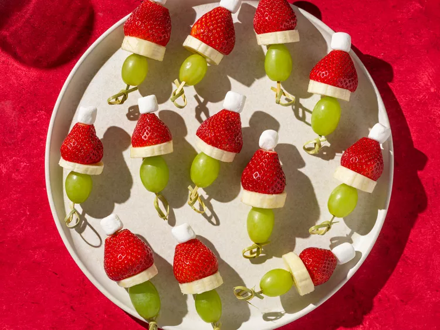

Grinch Kabobs

These little fruit skewers are simple to make and a great addition to your appetizers at any Christmas party.
- 24 green grapes
- 1 large banana, cut into 24 slices, or as needed/li>
- 24 hulled strawberries, tips removed
- 24 miniature marshmallows
- 24 toothpicks
Home